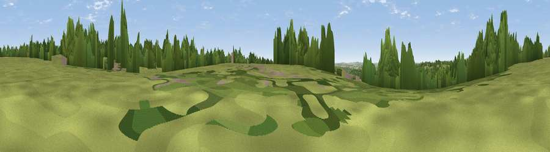

Dry Hill
#37167 in England · top 62% of its area beats it · near MedsteadWhere it is
The exact computed spot (SU 65276 36453). Click the marker for map links.
The view, rendered

A 360° render of this exact spot computed from the terrain model, tree cover and land cover — summer colours, afternoon light, calibrated against photographs of famous viewpoints. Real trees, hedges and buildings will differ in detail.
The panorama
Grey silhouette: terrain skyline in each direction (720 bearings, Earth curvature and refraction included). Dashed green: skyline with trees (+15 m) and buildings (+8 m) as obstacles. Blue strip: how far the ground is visible on each bearing.
Where the view opens
Wedge length = distance to the farthest visible ground on that bearing (vegetation-aware). Rings at 10, 25 and 50 km.
What fills the view
43% grassland · 30% cropland · 24% woodland · 3% built-up
Angular shares of the visible panorama (visual magnitude), not map area. Landscape diversity 0.51 (0–1 Shannon).
Key numbers
More beautiful places nearby
The staircase of upgrades: each row has a higher view potential than everything closer. Driving times are estimates from straight-line distance, calibrated against real road routing — check an actual route before setting out.
| Place | Direction | Drive | Score |
|---|---|---|---|
| Kings Hill | ENE · 2 km | ~6 min | 38.6 |
| Wivelrod Hill | NE · 3 km | ~8 min | 43.5 |
| Viewpoint near Four Marks | ESE · 4 km | ~8 min | 44.4 |
| Viewpoint near West Tisted | S · 7 km | ~14 min | 54.4 |
| Noar Hill | ESE · 11 km | ~20 min | 62.3 |
| Viewpoint near Steep | SE · 13 km | ~24 min | 68.7 |
| Beacon Hill | SSW · 15 km | ~27 min | 71.7 |
| Viewpoint near Meonstoke | S · 16 km | ~28 min | 74.8 |
51.12365, -1.06866 · source: osm peak · position refined by local search. Computed location — check access rights before visiting.